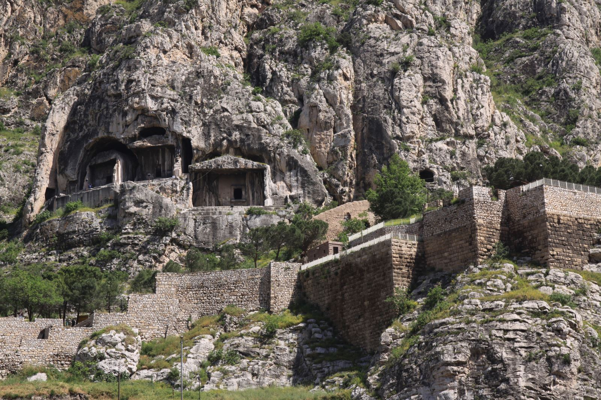
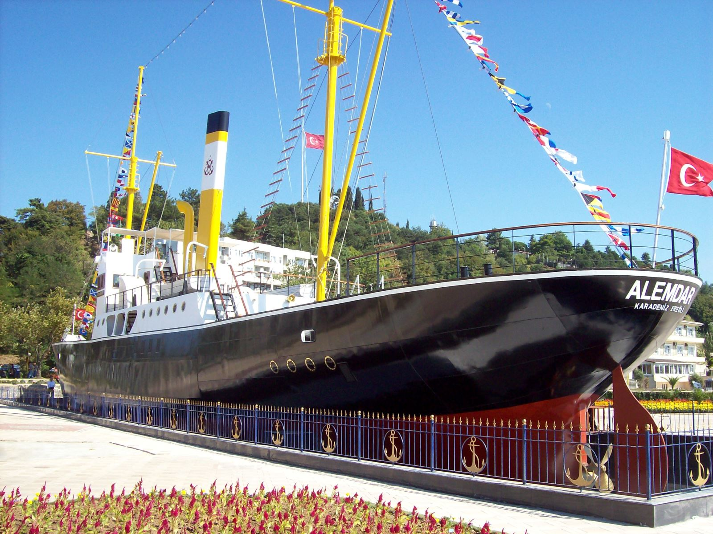

Mirasımız
Ereğli Tarihinin Özeti
Ereğli, tarihsel kökleri MÖ 2000'li yıllara uzanan çok eski bir kenttir. Bir uygarlık beşiğidir. Tarihsel veriler, ilçenin İyonlardan Türk egemenliğine kadar çok sayıda Anadolu Uygarlığını barındırdığını, bu şekilde bir uygarlıklar mozayiği oluşturduğunu göstermektedir. Ereğli bu özelliğini Batı Karadeniz’deki belli başlı iki doğal limandan birisine sahip olmasına borçludur.
Ancak tarihsel veriler kıyı ticaretinin Ereğli’yi, hakkettiği gelişmişlik düzeyine ulaştırmakta yersiz kaldığını göstermektedir. Bunun nedeni, Ereğli'yi bir liman kenti olarak üretken iç kesimlere bağlayan karayollarının olmamasıdır, yani Ereğli bir hinterlanda sahip olamamıştır. 1334 (1918) tarihli Müstakil Bolu Sancağı Salname-i Resmiyesi'nde de bu gerçek vurgulanmakta; Ereğli’nin önemli çapta bir ticari hareketliliğine kavuşamaması, iç kesimlerle irtibatının olmayışına bağlanmaktadır. Ereğli’yi geliştiren, 1848 yılında işletmeye açılan taşkömürü madeni ile 1965 yılında işletmeye alınan Ereğli Demir ve Çelik Fabrikaları olmuştur. Bu dönemden itibaren sınai kentleşme sürecine giren ilçe, coğrafi yapısının da elverişli olması nedeniyle, giderek Batı Karadeniz’in ağır sanayi merkezlerinden birisi haline gelmiştir.
Hercules Mağarası(Kral Mezarı)
Bu mağara, antik çağda bir tapınak olarak kullanılan ve sonrasında bir mezar haline getirilen önemli bir yapıdır. Ayrıca mağara, Mitolojik kahraman Herkül'ün bu bölgede yaşadığına dair hikayeleri anımsatır. Mağara, Ereğli'nin hemen dışında bulunur.
Cehennemağzı Mağaraları
Bu mağara kompleksi, antik çağda bir dini merkez olarak hizmet vermiştir. Kompleks, üç farklı mağaradan oluşur: Ayazma, Koca Yusuf ve Sarpıncık. Ayazma mağarası, bir dini ayin yeri olarak kullanılan en büyük mağaradır. Koca Yusuf Mağarası, eski bir yer altı kilisesidir. Sarpıncık Mağarası ise daha küçük bir yapıdır ve antik çağda bir depo olarak kullanıldığı düşünülmektedir.

Gazi Alemdar Gemisi
Gazi Alemdar Gemisi, Türkiye'nin kurtuluş savaşı sırasında önemli bir rol oynayan ve Türk donanmasının son zırhlı gemisi olarak bilinen bir deniz müzesidir. Kurtuluş Savaşı sırasında işgal altındaki İstanbul'dan vatanseverler tarafından kaçırılmıştır. Gemide, döneme ait birçok tarihi obje ve belge sergilenmektedir.
